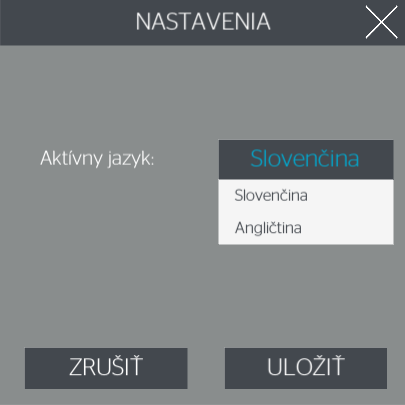
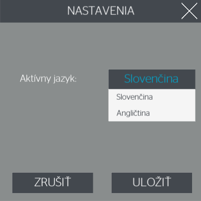

Nastavenia

V hlavnom menu Upraviť → Nastavenia sa nachádzajú nastavenia aplikácie.
Kliknutím na tlačidlo Zmeň jazyk je možné prepínať medzi slovenčinou a angličtinou.
Pre opustenie nastavenia kliknite na tlačidlo Zrušiť alebo Uložiť.

V hlavnom menu Upraviť → Nastavenia sa nachádzajú nastavenia aplikácie.
Kliknutím na tlačidlo Zmeň jazyk je možné prepínať medzi slovenčinou a angličtinou.
Pre opustenie nastavenia kliknite na tlačidlo Zrušiť alebo Uložiť.